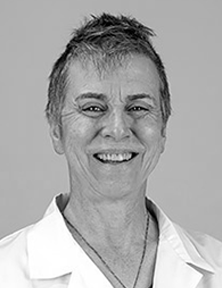
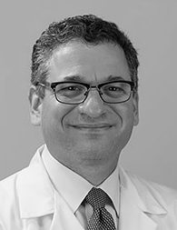
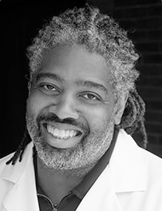
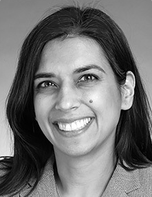
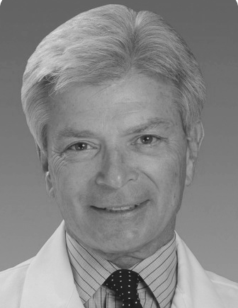
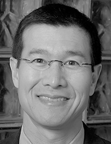
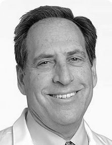
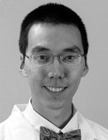

Tatiana Dixon MD joined UI Health in July 2013 as Assistant Professor of Otolaryngology-Head and Neck Surgery. She works extensively with patients in the UI Hospital ENT Clinic, both in general Otolaryngology and Facial Plastic Surgery. She has done extensive research in and published on various aspects of Facial Plastic Surgery. Dr. Dixon has received numerous awards and honors for her research and clinical work, and she has served on medical missions in Costa Rica and Guatemala.
Tatiana Dixon MD joined UI Health in July 2013 as Assistant Professor of Otolaryngology-Head and Neck Surgery. She works extensively with patients in the UI Hospital ENT Clinic, both in general Otolaryngology and Facial Plastic Surgery. She has done extensive research in and published on various aspects of Facial Plastic Surgery. Dr. Dixon has received numerous awards and honors for her research and clinical work, and she has served on medical missions in Costa Rica and Guatemala.
Tatiana Dixon, MD
Gina Jefferson, MD
With a broad background in ENT, and a specialty in head and neck surgical oncology, microvascular reconstruction, and transoral robotic surgery, Dr. Jefferson will work closely with Dr. Barry Wenig, Professor and Director of the head and neck cancer program at UI Hospital and Health Science System. Her mission is to treat patients with benign and malignant tumors of the head and neck, to eradicate cancer while maintaining quality of life issues such as speech and swallowing function by her reconstructive efforts and minimally invasive procedures.
Stephanie Joe, MD
 Associate Professor & Director, Sinus & Nasal Allergy Center. Fellow, American Academy of Otolaryngology-Head & Neck Surgery The Sinus & Nasal Allergy Center is dedicated to the state-of-the-art evaluation and treatment of nasal and sinus disorders. The Center offers advanced techniques to address nasal and sinus problems such as, nasal obstruction, congestion, runny nose, nasal allergies, chronic sinusitis, deviated septum, nasal deformities, nasal and sinus tumors, cerebrospinal fluid leaks, and related sinus disorders.
Associate Professor & Director, Sinus & Nasal Allergy Center. Fellow, American Academy of Otolaryngology-Head & Neck Surgery The Sinus & Nasal Allergy Center is dedicated to the state-of-the-art evaluation and treatment of nasal and sinus disorders. The Center offers advanced techniques to address nasal and sinus problems such as, nasal obstruction, congestion, runny nose, nasal allergies, chronic sinusitis, deviated septum, nasal deformities, nasal and sinus tumors, cerebrospinal fluid leaks, and related sinus disorders.
Miriam Redleaf, MD
 Dr. Miriam Redleaf is a widely-respected expert in otology. She is the Louis J. Mayer Professor of Otology/Neurotology and head of the Otology/Neurotology Program and Audiology Division in the University of Illinois Department of Otolaryngology-Head and Neck Surgery. Dr. Redleaf specializes in the ear, the facial nerve, the nerves and canals leading to the ear, and the lateral skull base. She covers diseases such as chronic ear infections, skull base tumors, hearing loss from infancy through adulthood, and facial nerve disorders. Happy Ears on Taylor Street was created under her direction for cochlear implant children and families to embrace hearing. Dr. Redleaf is extensively published, having authored or coauthored more than 40 scholarly articles. She is a Diplomate of the American Board of Otolaryngology, and holds a Certificate of Added Qualification in Neurotology.
Ari Rubenfeld, MD
Dr. Ari Rubenfeld is a board-certified otolaryngologist who treats a range of head and neck issues in children as well as adults: nasal allergy and airway disorders, general conditions of the ear, non-malignant disorders of the head and neck, snoring, sleep apnea, and thyroid disorders. Dr. Rubenfeld is Medical Director of the ENT Clinic at the University of Illinois Eye & Ear Infirmary and an Assistant Professor of Otolaryngology - Head and Neck Surgery at the University of Illinois.
Herbert Sims, MD
 Dr. Sims is the director of the Chicago Institute for Voice Care- a comprehensive voice treatment center dedicated to the care of voice and airway disorders. A laryngologist and board-certified Otolaryngologist, as well as an accomplished musician, he uniquely blends his expertise and passions in his career in professional voice care. A graduate of the Yale University School of Medicine, where he completed his residency training, Dr. Sims completed a research fellowship at the National Institute on Deafness and Communication Disorders and a clinical fellowship at the Vanderbilt Voice Center. He is also an accomplished musician who plays trombone, bassoon and piano. He accepts appointments at his office in the Eye & Ear Infirmary and at 60 East Delaware Place, Suite 1460, Chicago, IL (312.255.8812)
Rakhi Thambi, MD
 Dr. Rakhi Thambi is an Assistant Professor of Otolaryngology-Head & Neck Surgery and Director of the Head & Neck Surgery Center at the University of Illinois Hospital. Board-certified in General Otolaryngology, her clinical work is extensive across adult and pediatric patients, with her specialties in general ENT, allergy, deviated septum, goiters, masses in the thyroid and neck, salivary gland tumors, sinus diseases, and sleep apnea/snoring.
James Thomas, MD
 Dr. J. Regan Thomas is Mario D. Mansueto Professor & Head of the Department of Otolaryngology-Head and Neck Surgery at the University of Illinois. An internationally recognized expert in facial plastic and reconstructive surgery, Dr. Thomas specializes in facelift, rhinoplasty, eyelid surgery, and scar revision. Dr. Thomas has led three prestigious organizations in his field, the American Academy of Facial Plastic and Reconstructive Surgery, American Board of Facial Plastic and Reconstructive Surgery, and American Academy of Otolaryngology - Head and Neck Surgery and has authored more than 200 scientific papers and publications, including six textbooks.
Dean Toriumi, MD
 Dr. Dean Toriumi is recognized all over the world as a leader in facial plastic and reconstructive surgery. Board-certified in Otolaryngology and Facial Plastic/Reconstructive Surgery, Dr. Toriumi is a Professor in the Department of Otolaryngology-Head and Neck Surgery , Director of Resident Research, and Head of the Division of Facial Plastic & Reconstructive Surgery at the University of Illinois. Dr. Toriumi specializes in rhinoplasty (nose surgery) and aging face surgery. He has been recognized as an expert in aesthetic and functional rhinoplasty in the popular and scientific press. He has won numerous awards, authored two books and published more than 140 medical papers as well as numerous book chapters. He is frequently invited to share his expertise and has presented at over 700 conferences and to his peers across the globe.
Barry Wenig, MD, MPH, FACS
 Dr. Wenig treats patients with malignant and benign tumors of the head and neck, with the goal of eradicating cancer while maintaining quality of life issues such as speech and swallowing function. Dr. Wenig is a nationally recognized expert in robotic surgery as well, and serves as part of a multidisciplinary team of surgeons and other clinicians that treats patients at the Head and Neck Cancer Center. Dr. Wenig coordinates care of head and neck cancer patients.
Jeffrey Yu, MD
 Dr. Jeffrey Yu has clinical interest and brings expertise in areas of cochlear implantation, bone anchored hearing devices, and assistive listening devices. He works with a team whose expertise encompasses a broad spectrum of diseases, including chronic infections of the ear, skull base tumors, hearing loss from infancy through adulthood, and disorders of the facial nerve. Dr. Yu is a member of the UIC Happy Ears on Taylor Street program for adult and pediatric cochlear implantation patients, and a Diplomate of the American Board of Otolaryngology. He is an Assistant Professor of Otolaryngology (Ear Nose and Throat) and a member of the Otology/Neurotology Center at the University of Illinois Hospital and Health Sciences System. He contributes to the center's mandate to provide comprehensive care for patients with hearing loss and balance disorders.